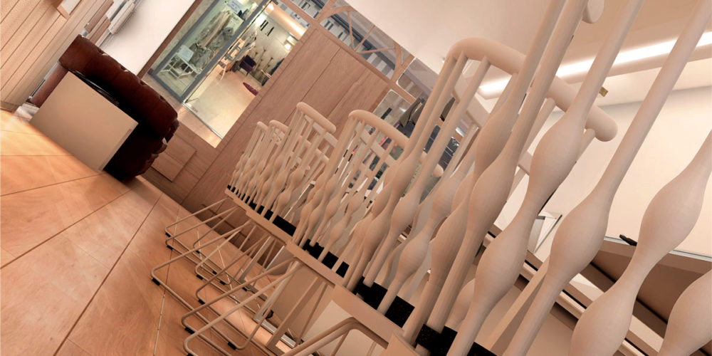
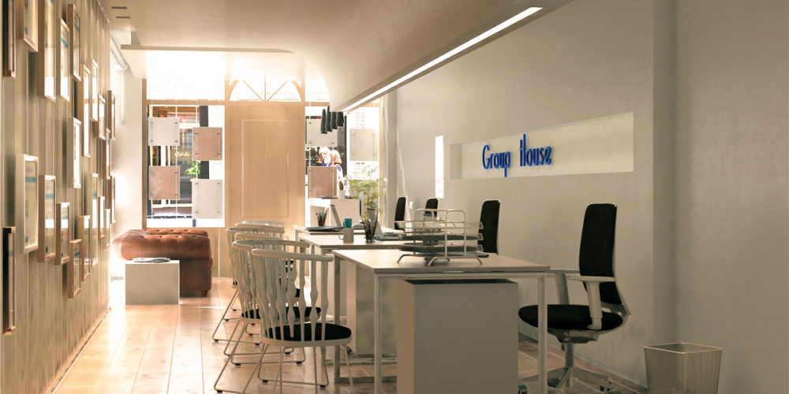

|
Marzo 2017 |
Group HouseDiseño de oficinas en Pozuelo de Alarcón para una empresa inmobiliaria de alto standing en esta población madrileña. El local, dentro de un centro comercial y con una superficie aproximada de 40 metros cuadrados, requeria marcar un caracter decorativo al mismo, muy fuerte, ya que el perfil de publico al que va dirigido es de alto poder adquisitivo. Dentro del marco de la distribución y funcionalidad que debe de tener un espacio de trabajo, hemos querido darle un aire de vivienda, introduciendo dos elementos muy característicos en el local, un sofá tipo chester, y las sillas de confidente Nub de Patricia Urquiola de Andreu World con una personalidad propia dentro de un espacio de oficina aplastante. En nuestros proyectos, los techos juegan un papel importante, y aquí aprovechamos la forma envolvente que le damos, para alojar la iluminación sobre la zona de trabajo. Una pequeña recepción con diseño de nuestro estudio, en el que el frente del mostrador se entierra y unifica con el suelo de la oficina, un laminado de gran formato en roble envejecido mate, que aporta la calidez, pero resistencia que requiere un espacio publico de alto tránsito. Mesas de trabajo con estructura y tablero en color blanco de Forma 5, paramentos blancos, formas, iluminación, con dos toques de mobiliario residencial, crean un espacio de atención al publico con cierto aire a hogar. Pocos metros, mucho interiorismo, equilibrio y proporción…básico en cualquier proyecto de arquitectura interior. El diseño de oficinas en Pozuelo de Alarcón, con este proyecto de interiorismo, abre las puertas a la mezcla de los espacios de trabajo y mobiliario residencial. |

 |